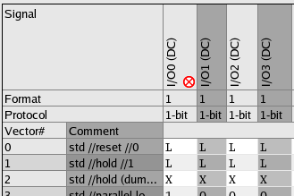
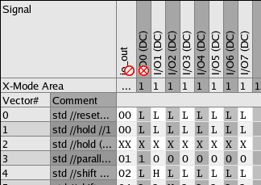

Masking and activating signals
Masking is used in debugging to filter out a known problem (such as a bad pin) so that failures in other areas are easier to identify.
About this task
Masking a signal causes all compare actions for that pin or pin group (the L and H receive edges) to be treated as if they were defined as "Do not care" receive edges (X) in the wavetable. When a signal is masked, it cannot produce a failure during a test. For example, if the vector is set up to expect a high input and a low input is received, there is no failure result.
To undo the masking of a signal, follow the procedure To activate a signal (see below).
Masking with a pattern master file
If you work with a pattern master file, the global mask information is stored in the .<pattern_master_file_name>.SREC file in the vectors subdirectory of the device directory. This hidden file contains the SREC firmware command with the list of globally masked pins.
Keep in mind when you work with a pattern master file:
- All patterns you load to the hardware are associated with the same globally masked pins.
- You can change your global masked settings in the pattern editor. Your changes apply to all patterns of the pattern master file.
- You can edit the SREC command in the hidden file .<pattern_master_file_name>.SREC.
- To globally remove all global mask settings, you can delete the hidden file
.<pattern_master_file_name>.SREC.Note Use this global mask feature mainly for debugging during test program development. If you want to use it in a production environment, make sure the masked pins are not required for the test. Otherwise, you must activate the masked pins before running a production test. That is, either edit or delete the .<pattern_master_file_name>.SREC file.
SmarTest displays a warning, when starting a test with a .<pattern_master_file_name>.SREC file. No warning is displayed for o/io pins which are shared between sites.
Masking with a global vector file
If you work with a global pattern file (also referred to as global vector file) - not with a pattern master file - the global mask information is added to the global pattern file: The SREC firmware command with the list of masked pins as an attribute is written to the global pattern file. For example, the following line in the global pattern file globally masks the pins Q0 and Q7:
SREC X, (Q0, Q7)
You can activate the masked pins in the pattern editor or activate the masked pins by changing the pattern file manually.
Before you begin
The following procedures describe the masking and activating with the pattern editor. It must be open with the pattern containing the signal you want to mask.
Procedures
Masking a signal
- Highlight the signal column you want to mask. If you want to mask more than one signal in one go, highlight these signals: Click the first signal column, press Shift and click the next signal column. All signals in between will be highlighted.
- Right-click and select Mask Signal. The masked signal will be marked
with a red symbol (see graphics).

If the masked signal is part of a pin group, the related pin group will be marked with a slightly different symbol.
In the figure below the signal of the pin I/O0 is masked. The pin I/O0 is part of the pin group io_out.

Activating a signal
- Highlight the signal column you want to activate. If you want to activate more than one signal in one go, highlight these signals: Click the first signal column, press Shift and click the next signal column. All signals in between will be highlighted.
- Right-click and select Activate Signal. The red symbol disappears.
Results
If you have masked a signal, errors related to this signal will be ignored.
If you have activated a signal, errors related to this signal will be displayed.
Functional changes
- SmarTest 6.5.3: Warning when using SREC